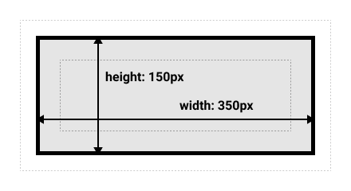

1. CSS 简述
层叠样式表 (Cascading Style Sheets，缩写为 CSS），是一种样式表语言，用来描述 HTML 或 XML（包括如 SVG、MathML、XHTML 之类的 XML 分支语言）文档的呈现。CSS 描述了在屏幕、纸质、音频等其它媒体上的元素应该如何被渲染的问题。
CSS是为网页添加样式的代码
和 HTML 类似，CSS 也不是真正的编程语言，甚至不是标记语言。它是一门样式表语言，这也就是说人们可以用它来选择性地为 HTML 元素添加样式。
1.1 CSS 语法
上图的显示的整个结构称为“规则集”（通常简称“规则”），各部分释义如下：
-
选择器（Selector）：
- HTML 元素的名称位于规则集开始。它选择了一个或多个需要添加样式的元素（在这个例子中就是 p 元素）。要给不同元素添加样式只需要更改选择器就行了。
- 声明（Declaration）
- 一个单独的规则。如 color: red; 用来指定添加样式元素的属性。
- 属性（Properties）
- 改变 HTML 元素样式的途径。（本例中 color 就是
元素的属性。）CSS 编写人员决定修改哪个属性以改变规则。
- 属性的值（Property value）
- 在属性的右边，冒号后面即属性的值，它从指定属性的众多外观中选择一个值（我们除了 red 之外还有很多属性值可以用于 color ）。
语法注意事项：
- 每个规则集（除了选择器的部分）都应该包含在成对的大括号里（{}）。
- 在每个声明里要用冒号（:）将属性与属性值分隔开。
- 在每个规则集里要用分号（;）将各个声明分隔开。
- 如果要同时修改多个属性，只需要将它们用分号隔开。
1.2 CSS 选择器
| 选择器名称 |
选择的内容 |
示例 |
| 元素选择器（也称作标签或类型选择器） |
所有指定类型的 HTML 元素 |
p
选择<p> |
| ID 选择器 |
具有特定 ID 的元素（单一 HTML 页面中，每个 ID 只对应一个元素，一个元素只对应一个 ID） |
#my-id
选择<p id="my-id"> 或 <a id="my-id"> |
| 类选择器 |
|
|
| 属性选择器 |
拥有特定属性的元素 |
img[src]
选择<img src="myimage.png"> 而不是<img> |
| 伪（Pseudo）类选择器 |
特定状态下的特定元素（比如鼠标指针悬停） |
a:hover
仅在鼠标指针悬停在链接上时选择<a>。 |
选择器的种类远不止于此，更多信息请参阅选择器。
2. CSS 盒模型
编写 CSS 时你会发现，你的工作好像是围绕着一个一个盒子展开的——设置尺寸、颜色、位置，等等。页面里大部分 HTML 元素都可以被看作若干层叠的盒子。
CSS 布局主要就是基于盒模型的，每一个 HTML 元素都可以看做是一个盒子。
当对一个 HTML 文档进行布局（lay out）的时候，浏览器的渲染引擎会根据标准之一的 CSS 基础框盒模型（CSS basic box model），将所有元素表示为一个个矩形的盒子（box）。CSS 决定这些盒子的大小、位置以及属性（例如颜色、背景、边框尺寸…）。
每个盒子由四个部分（或称区域）组成，其效用由它们各自的边界（Edge）所定义（原文：defined by their respective edges，可能意指容纳、包含、限制等）。如图，与盒子的四个组成区域相对应，每个盒子有四个边界：内容边界 Content edge、内边距边界 Padding Edge、边框边界 Border Edge、外边框边界 Margin Edge。
2.1 CSS 标准盒模型
- CSS 的标准盒模型中组成一个块级盒子需要以下五个部分：
- Content 内容
- 这个区域是用来显示内容，大小可以通过设置 width 和 height。
- Padding 内边距
- 包围在内容区域外部的空白区域。
- 与margin不同，padding不能有负数量的内边距，所以值必须是0或正的值。
- 应用于元素的任何背景都将显示在内边距后面，内边距通常用于将内容推离边框。
- Border 边框
- 边框是在边距和填充框之间绘制的。
- 如果您正在使用标准的盒模型，边框的大小将添加到框的宽度和高度。
- 如果您使用的是替代盒模型，那么边框的大小会使内容框更小，因为它会占用一些可用的宽度和高度。
- Margin 外边距
- 这是最外面的区域，是盒子和其他元素之间的空白区域。大小通过 margin 相关属性设置。
- 外边距是盒子周围一圈看不到的空间。它会把其他元素从盒子旁边推开。 外边距属性值可以为正也可以为负。设置负值会导致和其他内容重叠。无论使用标准模型还是替代模型，外边距总是在计算可见部分后额外添加。
- 外边距折叠: 如果有两个外边距相接的元素，这些外边距将合并为一个外边距，即最大的单个外边距的大小。当有两个段落时，顶部的第一个段落的 margin-bottom为50px。第二个段落的margin-top 为30px。因为外边距折叠，所以两个段落之间的实际外边距是50px，而不是两个外边距的总和（80px）。
- 有许多规则规定了什么时候外边距会折叠，什么时候不会折叠。相关更多信息，请参阅mastering margin collapsing。
在标准模型中，如果你给盒设置 width 和 height，实际设置的是 content box。 padding 和 border 再加上设置的宽高一起决定整个盒子的大小。
margin 不计入实际大小。当然，它会影响盒子在页面所占空间，但是影响的是盒子外部空间。盒子的范围到边框为止，但不会延伸到margin。
2.2 替代（IE）盒模型
你可能会认为盒子的大小还要加上边框和内边距，这样很麻烦，而且你的想法是对的! 因为这个原因，css还有一个替代盒模型。使用这个模型，所有宽度都是可见宽度，所以内容宽度是该宽度减去边框和填充部分。

默认浏览器会使用标准模型。如果需要使用替代模型，您可以通过为其设置 box-sizing: border-box 来实现。 这样就可以告诉浏览器使用 border-box 来定义区域，从而设定您想要的大小。
如果你希望所有元素都使用替代模式，而且确实很常用，设置 box-sizing 在 <html> 元素上，然后设置所有元素继承该属性。
如果想要深入理解，请看the CSS Tricks article on box-sizing。
4. CSS 布局
4.1 默认文档流布局
如果未曾应用任何 CSS 样式引入 HTML 文档，浏览器会按照默认的文档流方式（Basic document flow)呈现 HTML 中的各种元素。
默认情况下，一个块级元素的内容宽度是其父元素的100%，其高度与其内容高度一致。行内元素的height width与内容一致。你无法设置行内元素的height width --- 它们就那样置于块级元素的内容里。 如果你想控制行内元素的尺寸，你需要为元素设置display: block; （或者，display: inline-block; inline-block 混合了inline 和 block的特性。)
正常布局流（在布局介绍里提到过）是一套在浏览器视口内放置、组织元素的系统。默认的，块级元素按照在文档中书写出现的顺序放置 --- 每个块级元素会在上一个元素下面另起一行，它们会被设置好的margin 分隔。在英语，或者其他水平书写、自上而下模式里，块级元素是垂直组织的。
行内元素的表现有所不同 --- 它们不会另起一行；只要在其父级块级元素的宽度内有足够的空间，它们与其他行内元素、相邻的文本内容（或者被包裹的）被安排在同一行。如果空间不够，溢出的文本或元素将移到新的一行。
4.2 float布局
float 属性最初只用于在成块的文本内浮动图像，但是现在它已成为在网页上创建多列布局的最常用工具之一。
最初，引入 float 属性是为了能让 web 开发人员实现简单的布局，包括在一列文本中浮动的图像，文字环绕在它的左边或右边。你可能在报纸版面上看到过。但 Web 开发人员很快意识到，任何东西都可以浮动，而不仅仅是图像，所以浮动的使用范围扩大了。
浮动曾被用来实现整个网站页面的布局，它使信息列得以横向排列（默认的设定则是按照这些列在源代码中出现的顺序纵向排列）。目前出现了更新更好的页面布局技术，所以使用浮动来进行页面布局应被看作传统的布局方法。
4.3 flex布局
弹性盒子是一种新技术，但在如今各个浏览器都广泛支持的情况下，它已经开始准备广泛应用了。 弹性盒子提供了工具，允许快速创建曾经被证明用CSS很难实现的一些复杂，灵活的布局和功能。
当元素表现为 flex 框时，它们沿着两个轴来布局：
- 主轴（main axis）是沿着 flex 元素放置的方向延伸的轴（比如页面上的横向的行、纵向的列）。该轴的开始和结束被称为 main start 和 main end。
- 交叉轴（cross axis）是垂直于 flex 元素放置方向的轴。该轴的开始和结束被称为 cross start 和 cross end。
- 设置了 display: flex 的父元素被称之为 flex 容器（flex container）。
- 在 flex 容器中表现为柔性的盒子的元素被称之为 flex 项（flex item）。
4.4 grid布局
网格布局是一个成熟的设计工具，许多现代网站布局是基于规则网格。在本文中，我们将看看基于网格的设计，以及如何使用CSS来创建网格——两者都通过现在的工具，和刚刚开始在浏览器中可用的新技术。
网格仅仅是由水平和垂直线集合创建的一个模式，我们可以根据这个模式排列我们的设计元素。它们帮助我们创建设计——在页面之间移动时元素不会跳动或更改宽度，从而在我们的网站上提供高一致性。
网格通常具有列（column），行（row），以及在每行和列之间的间隙——通常称为沟槽（gutter）。